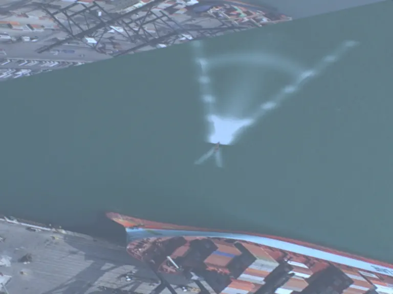
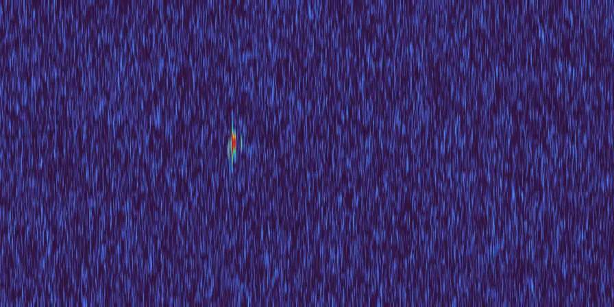
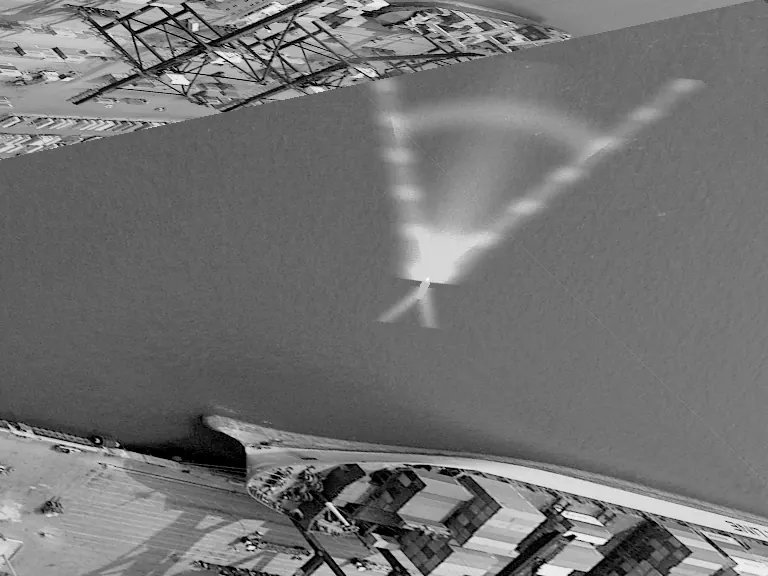
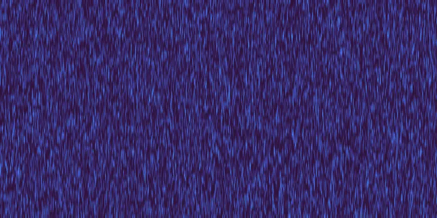

海域连续片段 · 2026-11-11 · 30 帧 / 10 fps / 3.0 s
同一帧，四路传感器各自成像
一次接近被同时记进四路通道：可见光、中波红外、长波红外与毫米波雷达。它们共享同一个三维场景、同一位姿、同一套运动真值。右侧读数逐帧取自落盘文件，不是页面装饰。
- 集装箱港口 · 实拍底板
- 28 m 舰船 · Kelvin 尾迹
- 斜距 2351 → 2326 m
- Ku 15 GHz · 距离分辨率 3.0 m
- 768×576 · COCO + YOLO

可见光 · Cycles 帧 12 / 30
雷达 RD · Ku 15 GHz点击缩略图或拖动滑轨换帧，方向键逐帧，空格播放。
02 · 波段
一条温度，两个窗口
同一帧的红外图像在 3–5 µm 与 8–12 µm 各拍一次。两个窗口的差别不是配色，是 Planck 曲线在不同温度下的形状：常温海面几乎全部落在长波，热部件才把能量推去中波。

两张红外预览经过各自的 AGC 拉伸，相关系数约 0.995：同一表面温度主导了两者，波段差异留在 16-bit 原始计数里。预览看起来几乎一样，不代表两个探测器看到的一样。
黑体辐亮度与两个大气窗口
曲线按各自峰值归一化，看的是形状与峰值位置。拖动温度，读出 λmax 与两个窗口占总辐射的份额（份额在 1–40 µm 上积分）。
白线：拖动设定的温度 · 青线：300 K · 橙线：800 K，两者为固定参考。每条曲线按自身峰值归一化，可比的只有形状与窗口份额。
- λmax
- 9.66 µm
- 3–5 µm
- 1.4%
- 8–12 µm
- 27.9%
- 4 µm 处 800/300 K
- —
- 舰体参考
- 24 °C / 297 K
03 · 干扰
同一条船上加一部干扰机
两段运行共用同一套底板与同一型目标，雷达参数一致，差别在干扰配置：左段无源，箔条云、角反射器、拖曳诱饵与红外诱饵在物理层各自成一次回波；右段另加一部宽带噪声压制，加 DRFM 假目标与速度波门拖引。两段的接近时序并不严格同步，所以下面比的是逐帧统计，不是同一时刻的像素对像素。

B · 有源- 干扰功率比 J/S
- 38.0–56.4 dB
- 噪声底抬升
- 49.9–53.7 dB
- 峰值 SNR 落差
- 50.3 dB
- 压制机泄漏
- 200 W ERP
峰值 SNR 随帧
两段各 30 帧。灰线是无源运行的 70.7 dB 量级，橙线是叠加噪声压制后的读数。
两张 RD 图各自按本段噪声中位数自锚，所以看起来都像"雪"。把窗口换到同一把绝对标尺上就露馅了：B 的整幅图比 A 高 52 dB，这个数与 J/S 同量级。有源段的 SNR 在 0 与 21 dB 之间跳动，剩下的检出多是 DRFM 复制品与偶然过门限的散斑。
无源组：物理层回波
| 实体 | 类型 | 距离 | 参数 |
|---|
有源组：注入同一 RD 通道
| 实体 | 类型 | 距离 | 参数 |
|---|
04 · 配方
十八个开箱即用的组合
空 / 陆 / 海三域各配三套实拍底板，每套再分出有源与无源两种干扰配置。下面每一格都能在工作台里原样载入，改帧数与波段后重跑。
命名规则 p_<域>_<底板>_<干扰模式>.json，落在 configs/recipes/。底板文件取自 assets/backdrops/，未做辐射标定，只用来给光学与红外提供可见纹理。
05 · 局限
这一页能证明什么，不能证明什么
成立
- 四路通道同帧同姿，标注框、斜距、径向速度都由同一套三维投影与 RD 峰值检测导出。
- 雷达成图上的菱形（真值）与十字（峰值）由数据算出，页面不做手工对齐。
- 干扰前后的 SNR 落差来自同一次仿真落盘的
meta.json，不是示意数值。 - 配方矩阵里的每一格都能用仓库里的命令重建，随机种子固定。
不成立
- RCS 是面元物理光学近似加覆盖值，不是实测标定；换一个 RCS 假设，作用距离会明显移动。
- RD 是原始相参显示通道，没有 CFAR，没有距离走动补偿，只有单通道指数散斑。
- 红外预览经过 AGC，两个波段高度相关；底板是照片温度映射，不是热像仪标定。
- 海域的尾迹是程序纹理，按片段中点烘焙；船速对 28 m 艇偏高。
- 本页四路通道不含 SAR 与激光雷达，它们的地面/海面几何不适合这次俯视接近场景。
数值为工程近似，用于算法训练与验证，不替代实测标定。